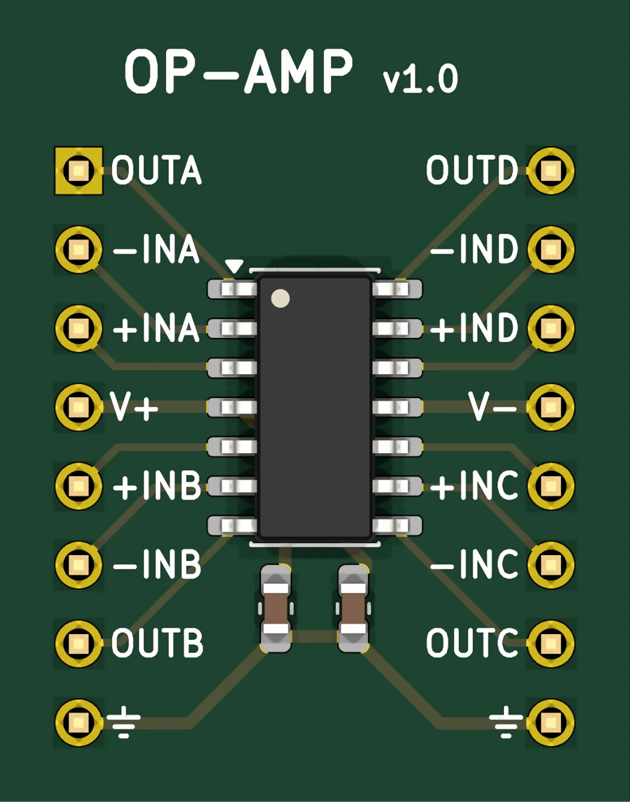
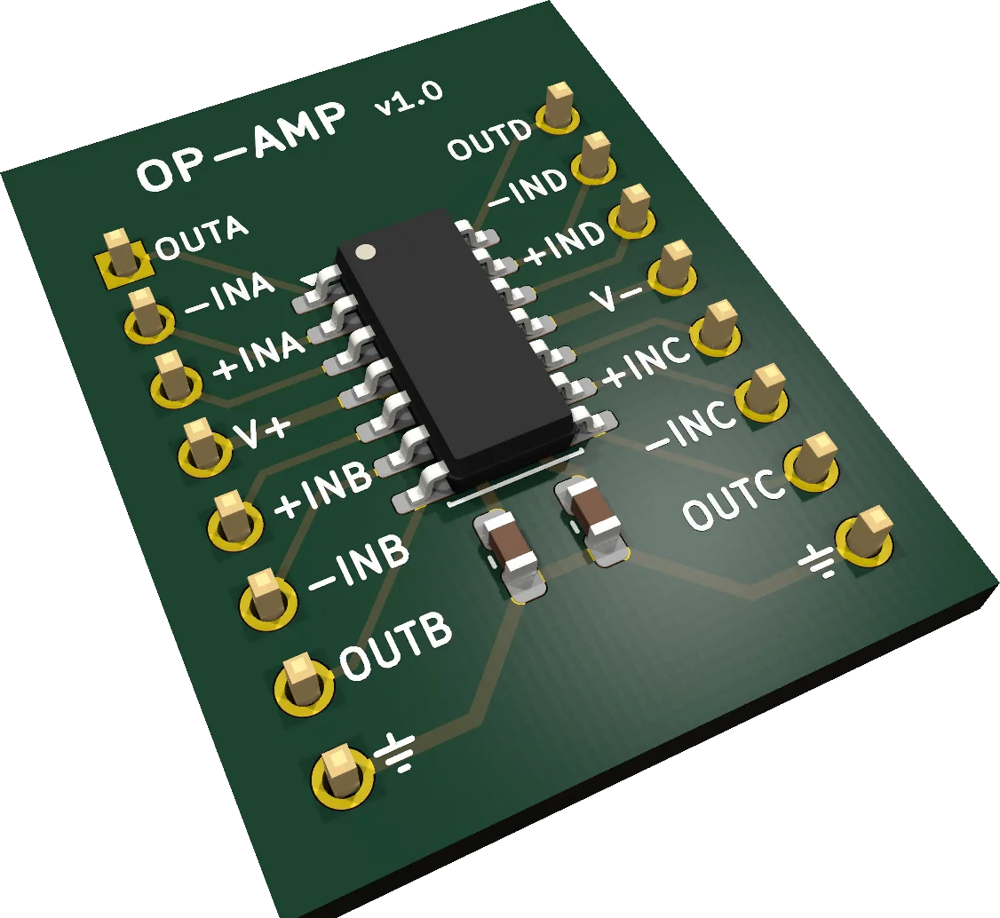
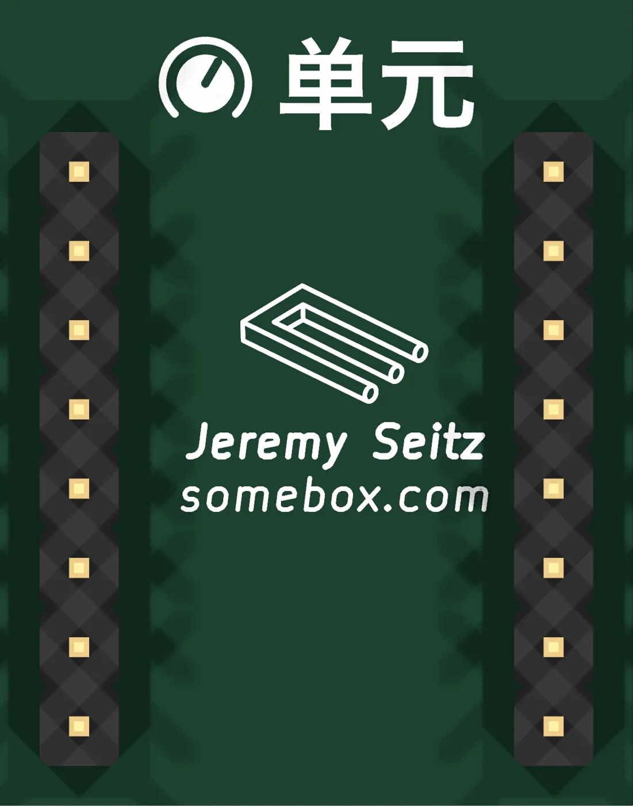
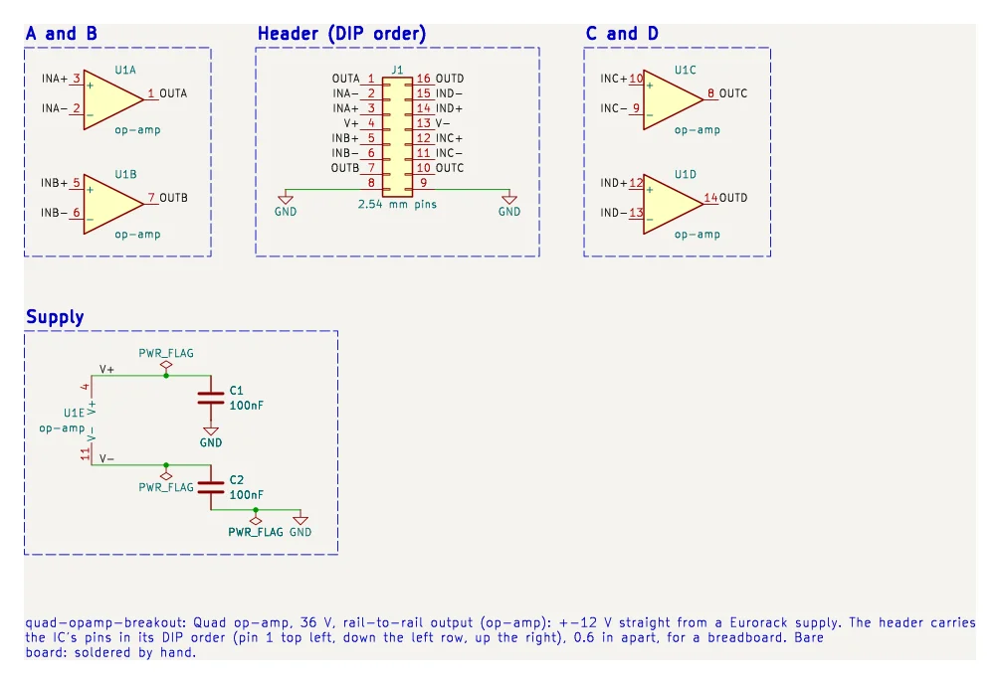

Quad op-amp breakout: four 36 V op-amps
A quad op-amp with rail-to-rail output on a 0.6 in wide header, running straight from ±12 V.
A breakout for a quad op-amp that runs on up to 36 V and swings its output rail to rail, so it works straight from a Eurorack ±12 V supply and still reaches +10 V, where an older quad may stop short. It is the op-amp behind the test rig's CV outputs.
As with the other chip breakouts, the chip and its decoupling sit on a board 0.8 in wide, the pins on two rows of 2.54 mm header 0.6 in apart in DIP order. It straddles a breadboard and the usual quad op-amp pinout holds: units A and B on the left, C and D on the right. A GND pin at the foot of each row returns the decoupling capacitors.
It left the chip panel when the op-amp lab board took its place, so it waits to be ordered on its own. Not built.
- Status
- Drawn and checked; not ordered yet
- Version
- v1.0 (2026-10-26)
- Board
- 20.32 × 25.82 mm, 2 layers



What it does
- One quad op-amp: 36 V supply, rail-to-rail output.
- 2 × 8 pins on a 2.54 mm pitch, rows 15.24 mm (0.6 in) apart: the chip's 14 pins in DIP order, and a GND pin at the foot of each row.
- Supply: ±12 V, anywhere from 2.7 to 36 V across V+ and V−.
- 100 nF on each supply pin.
- 20.32 × 25.82 mm, 0.8 in wide.
Pins
| OUTA | OUTD |
| -INA | -IND |
| +INA | +IND |
| V+ | V- |
| +INB | +INC |
| -INB | -INC |
| OUTB | OUTC |
| GND | GND |
Wiring and setup
- The header goes underneath, long pins down, soldered from the front.
- Connect both GND pins to ground for the decoupling.
- The standard quad op-amp pinout: units A and B down the left row, C and D up the right.
- Tie an unused unit as a follower with its + input at GND (OUT to −IN).
Limits and open questions
- Not built yet.
- Not on the chip panel: it would be ordered as a single board.
Development notes
- It was one of five chip breakouts, then gave up its place on the panel to the op-amp lab board.
Schematic
The schematic as drawn, with each chip named by its function rather than its part number. The design isn't open source yet, so there are no files to download.


Would you use a QUAD OP-AMP? A thumbs-up on its tracking issue is how I count interest, and you can subscribe there to follow its bring-up. Questions and ideas go to the discussions.